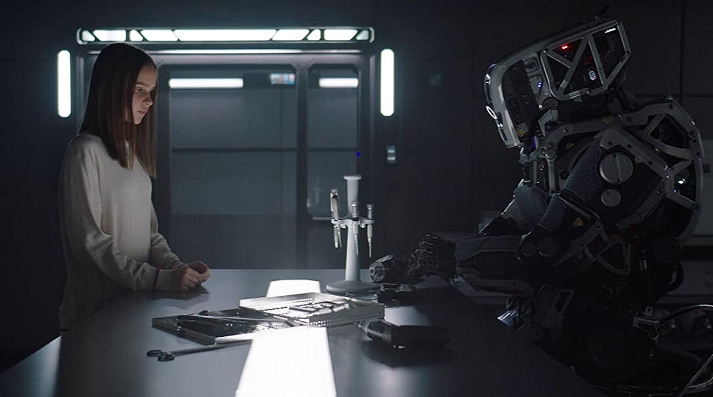

3. Community Nexus:
Fabula isn't just a place to live; it's a
holistic community that caters to every aspect
of life. Indulge in world-class amenities,
from state-of-the-art schools that nurture
young minds to community centers that foster
connections. Unwind in gyms equipped with
cutting-edge technology, take a dip in
crystalline swimming pools, and experience a
lifestyle beyond compare.
